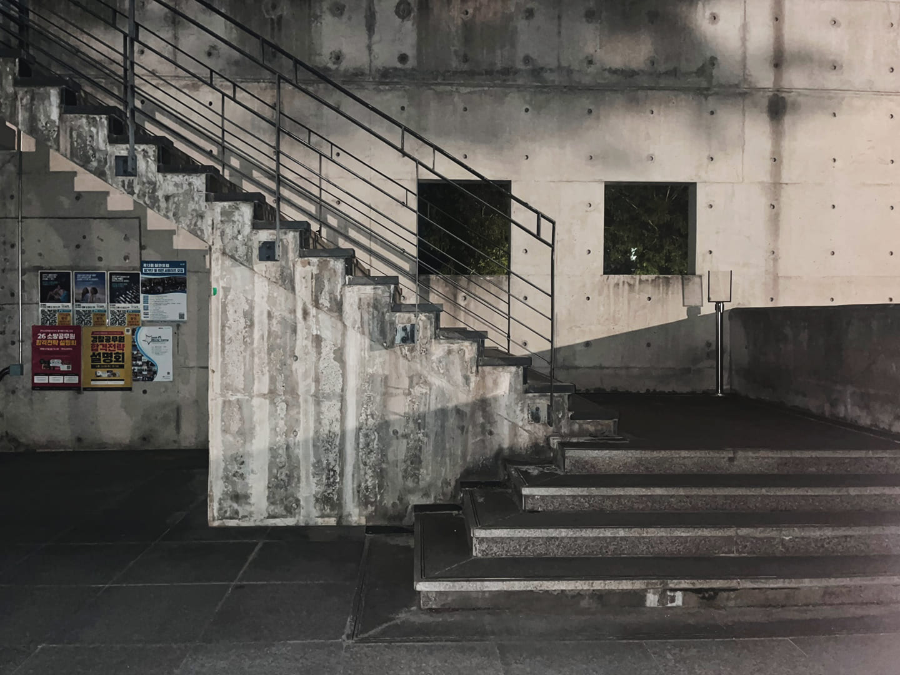

L자형 계단

특징
계단이 중간에서 90도로 꺾이는 구조.
보통 중간에 작은 플랫폼(landing)이 존재.
용도
주택, 빌라, 소형 상가 등 공간이 제한적인 건물에서 자주 사용.
벽 모서리에 배치할 때 적합.
장점
공간을 효율적으로 활용할 수 있음.
꺾이는 부분이 있어 낙상 시 안전성이 조금 더 높음.
시각적으로 단조롭지 않아 인테리어 효과도 있음.
단점
구조가 꺾여 있어 이사·이동 시 불편할 수 있음.
시공이 직선형보다 복잡하고 비용 증가 가능성 있음.